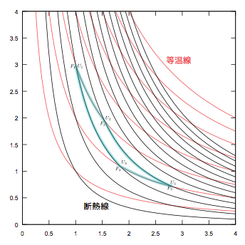
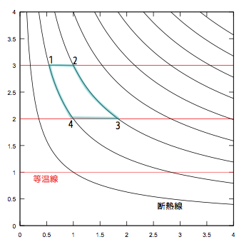
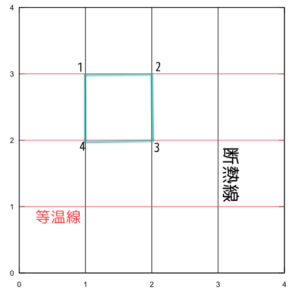
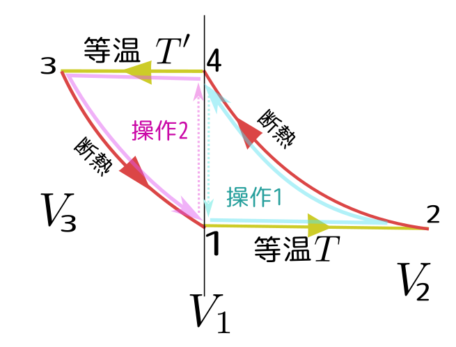

毎度おなじみのカルノーサイクルのアニメーションだが、今回はグラフが３種類書かれている（全部動く）ところが違う。
↓は、V-Pグラフ（横軸V、縦軸P）。
↓の左はV-Tグラフ、↓の右はS-Tグラフ。
温度計→（低温）（高温）
●の温度：
●の温度：
カルノーサイクルの効率＝
●の温度での吸熱量Q1= ●の温度放熱量Q2= 仕事量W=
物質量Nと気体定数Rは1にして計算してある。
四つの「角」のうち二つ（図の赤と青の●）はドラッグして動かせるので、サイクルの行程を変化させていろいろ試してみて欲しい。
ただし、温度は4から25の範囲までしか変化しないし、●の温度は●の温度より高くないといけない。
カルノーサイクルは等温操作と断熱操作を組み合わせているが、その等温線と断熱線を、$V$-$P$グラフ上に表現したものを見てみよう（↓は静止画）。

ということに気づいて欲しい。どちらの線も曲線で、しかもよく似ているのだから少々見た目がわかりにくい。そこで等温線の方だけを水平にしよう（それは簡単で、縦軸を温度$T$にすればよい）。グラフを次に載せよう。

この横軸（体積$V$）を適当にスケールして、軸を水平・垂直な格子状にすることもできるのは？---つまり、

のようなグラフを作りたい！！という「野望」を抱こう。
理想気体の場合では、断熱線は$T^cV=$一定の線だから、$x=T^cV$として新しい変数$x$を使えばよいかもしれない。しかし理想気体でない場合はまだ「断熱線上で一定となる数」を見つけてない。一般的にそういう量が見つけられる保証はあるだろうか？---そういう量が見つかるためには、
という二つの条件が満たされなくてはいけない。別の言い方をすれば「変化量」をサイクルで一周積分すれば0にならなくてはいけない。
たとえばその変化量として熱量$Q$を使う---というのはまずいアイデアである。というのは$1\to2$で吸収する熱量と$3\to4$で放出する熱量は絶対値が一致しない。逆符号で同じ大きさにはなってない。
ここでこれらの量の間に他に条件式はなかったっけ？---と思い出してみると、Carnotの原理により、 \begin{equation} {Q_{\rm out}\over Q_{\rm in}}={T_{3\to 4}\over T_{1 \to 2}} ~~~あるいは、~~~ {Q_{\rm out}\over T_{3\to 4}}={Q_{\rm in}\over T_{1 \to 2}} \end{equation}
があるから、$\Delta S={Q\over T}$のような変化をする量$S$を定義すると、ちゃんと$1\to2$での変化と$3\to4$での変化が逆符号で消し合うことになりそうだ。
もう１つ別の方向からのアプローチとして、図の2と3で等しく、図の1と4でも等しくなるような「状態量」を定義するという方法で考えてみよう。
等温操作での吸熱量は$U$の変化と$F$の変化の差であるから、$Q_{\rm in}=(U_2-U_1)-(F_2-F_1)$と$Q_{\rm out}=(U_3-U_4)-(F_3-F_4)$（$Q_{\rm out}$の方は引き算の方向が逆だが、これはinとoutの違い）という式が出る。これを代入すれば、
\begin{equation} {(U_3-F_3)-(U_4-F_4)\over T_{3\to 4}}={(U_2-F_2)-(U_1-F_1)\over T_{1 \to 2}} \end{equation}となる。ここで、${U-F\over T}$という量を$S$と書くことにすれば、
\begin{equation} S_3-S_4 = S_2 - S_1 \end{equation}なる式が出てくる。この式は「過程$1\to 2$における$S$の変化」と、「過程$3\to4$における$S$の変化」が等しいという式になっている。
これを少し入れ替えて$S_3-S_2=S_4-S_1$としてみる。これは「過程$2\to 3$における$S$の変化」と、「過程$4\to1$における$S$の変化」（二つの過程はどちらも断熱準静的操作であることに注意）と読み取ることができるが、これが$S$-$T$グラフ上で鉛直線となるためには、$S_3-S_2=0,S_4-S_1=0$となって欲しい。
そんなことできるのか、というと、できる。
というのはヘルムホルツ自由エネルギー$F$を定義したとき「等温操作において最大仕事の分だけ変化する量」として定義した（そして、温度が変化したときにどう変化するかはまだ定義してなかった）からである。
だから、「$F_1$と$F_2$の差」および「$F_3$と$F_4$の差」は最大仕事で定義されているが、「$F_2$と$F_3$の差」と「$F_4$と$F_1$の差」はまだ定義してなかった（ちなみに一方を決めればもう一方も決まる）。
よって、$F$の定義を調節することで、$S_3=S_2,S_4=S_1$にすることができる。
これで、$S$なる量を「$2\to3$と$4\to1$、つまり断熱準静的操作において変化しない量」あるいは「グラフの断熱線上で一定となる量」と定義する（ということは$S_3=S_4,S_2=S_1$と定義するということだが、それは上の式と矛盾なく行える）。そして、こう置いたことで、きまってなかった$F_3-F_4$と$F_2-F_1$を決めることができたことになる。
そのためには$S$はある平衡状態が与えられれば計算できるようにしたいから、「状態量」の組み合わせで作る必要がある。これまで出てきた状態量は、$P,V,T$の他に、
と、
の二つがあった。
$U$と$F$の定義を今の場合に適用すると
等温操作で成り立つ式
と、
断熱操作で成り立つ式
が言える。１→２と３→４は等温操作であるが、出発点と到着点が同じになるような断熱操作（あるいは、その逆の操作）は必ず存在していて、その時の仕事で内部エネルギー$U$の差が定義されているので、上のような式を作ることができることに注意。
そして、等温準静的操作での仕事と、同じ出発点・到着点が同じ断熱操作での仕事での差から系の吸収する熱量が定義できているから、
$Q_{\rm in}=U_2-U_1-(F_2-F_1)$（内部エネルギーの増加とヘルムホルツ自由の増加との差が吸熱量）
$Q_{\rm out}=U_3-U_4-(F_3-F_4)$（←こちらは「放出する熱量」なので引き算が逆）
がいえて、かつカルノーの定理${Q_{\rm out}\over Q_{\rm in}}={T'\over T}$または${Q_{\rm out}\over T'}={Q_{\rm in}\over T}$より、
$\displaystyle {U_3-U_4-(F_3-F_4)\over T'}={U_2-U_1-(F_2-F_1)\over T}$
となる。
今から定義する新しい状態量$S$は、断熱準静的操作では変化しないように（つまりカルノーサイクルの$2\to 3$と$4\to1$で変化しないように）しなくてはいけないから、
という二つの条件を満たすことが必要となる。この式を辺々引くと
$S_2-S_1=S_3-S_4$
となるが、まずこの式が以下ですぐに示せる。
$\displaystyle {U_3-U_4-(F_3-F_4)\over T'}={U_2-U_1-(F_2-F_1)\over T}$という式をじっくり見ると、$S={U-F\over T}$という量を作ると、この式は
$\displaystyle \underbrace{U_3-F_3\over T'}_{S_3}-\underbrace{U_4-F_4\over T'}_{S_4}=\underbrace{U_2-F_2\over T}_{S_2}-\underbrace{U_1-F_1\over T'}_{S_1}$
となって$S_3-S_4=S_2-S_1$となる。満たして欲しい条件は$S_2=S_3,S_1=S_4$だから、この二つの式の引き算については証明できた。
さて問題は$S_2=S_3$になるかどうかだが、その式は
$\displaystyle {U_2-F_2\over T}={U_3-F_3\over T'}$
である。ここで$F$の定義が、
だったことを思い出す。この定義は、等温操作による変化である$1\to2$と$3\to4$においてどのように$F$が変化したかは定義されている（つまり$F_2-F_1$と$F_4-F_3$は決っている。しかし$F_2$と$F_3$の関係については何も言ってない（決めてない）。
別の言い方をすれば、$F$は一本の「等温線」の上では値が（正確には、等温線に沿って動くときにどう値が変化するか）は決っているが、違う等温線ではどう変化するか（たとえば、断熱線に沿って動いたときにはどう変化するのか？？）は「まだ」決めていない。
「じゃあいつ決めるの？---今でしょ！」ということでここで、$S_2=S_3$になるように決める。
$S_3-S_4=S_2-S_1$はすでに示したから、$S_2=S_3$ならば$S_4=S_1$も決まる。
このようにして決めた新しい状態量が$S$すなわちエントロピーである。
エントロピーが示量変数で相加性を持つことは、$U,F$および$U,F$の定義に使った仕事という量が示量的で相加的であることを考えるとすぐに納得できる。また、断熱準静的操作で変化しないということも、ここで説明した作り方からすれば納得がいく。
次に大事な性質として、
がある。
これを証明するために、次の図のような二つの操作を考える。

ここで、操作１の４→１は、外界の温度（常に$T$）に接触した系（その前の段階で温度は$T'$になっていた）の温度が$T$に一致するまで待つ、という操作である（外界は常に温度$T$であることに注意）。
操作２の１→４も同様で、この場合は外界の温度が常に$T'$で、系の温度がそれに一致していく。
上の操作１（１→２→４→１）の一周において系のする仕事は、
$W_{\rm cyc}=\overbrace{F(T;V_1)-F(T;V_2)}^{1\to2での仕事}+\overbrace{U(T;V_2)-U(T';V_1)}^{2\to4での仕事}$
と書けるが、いまや$F=U-TS$となったことを使うと、
$W_{\rm cyc}=\overbrace{U(T;V_1)-U(T;V_2)-T(S(T;V_1)-S(T;V_2))}^{F(T;V_1)-F(T;V_2)}+U(T;V_2)-U(T';V_1)$
となり、ここで$-U(T;V_2)+U(T;V_2)$を消して、さらに$S(T;V_2)=S(T';V_1)$を使うと、
$W_{\rm cyc}=U(T;V_1)-T(S(T;V_1)-S(T';V_1))-U(T';V_1)$
となる。体積$=V_1$という、１つの体積について式が出せたことに注意。
ここで、環境（外界）の温度は常に$T$だったことを考えると、ケルビンの原理により、$W_{\rm cyc}\leq 0$だから、
$U(T;V_1)-U(T';V_1)-T(S(T;V_1)-S(T';V_1))\leq 0$
よって、
$T(S(T';V_1)-S(T;V_1))\leq U(T';V_1)-U(T;V_1)$
となる。同様に操作２（４→３→１→４）を考えると、
$W_{\rm cyc}=\overbrace{F(T';V_1)-F(T';V_3)}^{4\to3での仕事}+\overbrace{U(T;V_1)-U(T';V_3)}^{3\to1での仕事}$
から、
$W_{\rm cyc}=U(T';V_1)-T'(S(T';V_1)-S(T;V_1))-U(T;V_1)$
となって、これが$\leq0$であることから、
$U(T';V_1)-U(T;V_1)\leq T'(S(T';V_1)-S(T;V_1))$
が言える。
この二つをまとめて考えて、
$T(S(T';V_1)-S(T;V_1))\leq U(T';V_1)-U(T;V_1)\leq T'(S(T';V_1)-S(T;V_1))$
$T'\to T$になる極限（つまり、$T'-T=\Delta T\to0$となる極限）を考えると左辺も右辺も$T{\partial S(T;V)\over\partial T}\Delta T$へと接近する（中辺は${\partial U\over\partial T}\Delta T$になる）ので、
${\partial U\over \partial T}=T{\partial S\over \partial T}$
が言える。
このこと（つまり、内部エネルギーの$T$微分とエントロピーの$T$微分が、比例定数$T$で比例すること）からエントロピー$S$が温度の増加関数であることがわかる。